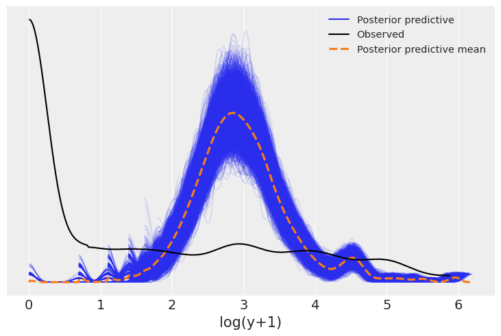
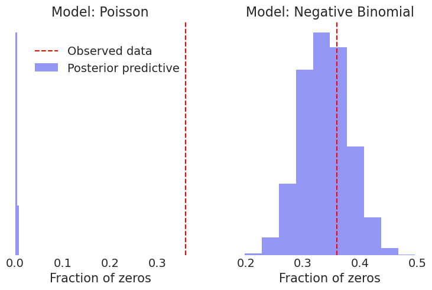

import arviz as az
import bambi as bmb
import matplotlib.pyplot as plt
import numpy as np
import pandas as pd
from scipy.stats import nbinomCount Regression with Variable Exposure
az.style.use("arviz-darkgrid")
SEED = 7355608This example is based on the “Roaches” example from Regression and Other Stories by Gelman, Hill, and Vehtari. The example is a count regression model with an offset term.
The data is the number of roaches caught in 262 apartments. Some pest control treatment was applied to 158 (treatment=1) of the apartments, and 104 apartments received no treatment (treatment=0). The other columns in the data are:
y: the number of roaches caughtroach1: the pre-treatment roach levelsenior: indicator for whether the appartment is for seniorsexposure2: the number of trap-days (number of traps x number of days).
roaches = pd.read_csv("data/roaches.csv", index_col=0)
# rescale
roaches["roach1"] = roaches["roach1"] / 100
roaches.head()| y | roach1 | treatment | senior | exposure2 | |
|---|---|---|---|---|---|
| 1 | 153 | 3.0800 | 1 | 0 | 0.800000 |
| 2 | 127 | 3.3125 | 1 | 0 | 0.600000 |
| 3 | 7 | 0.0167 | 1 | 0 | 1.000000 |
| 4 | 7 | 0.0300 | 1 | 0 | 1.000000 |
| 5 | 0 | 0.0200 | 1 | 0 | 1.142857 |
Poisson regression
One way to model this is to say that there is some rate of roaches per trap-day , and that the number of roaches caught is a Poisson random variable with a rate that is proportional to the number of trap-days (the exposure). That is:
\[ \begin{align*} y_i &\sim \text{Poisson}(\text{exposure2}_i \times \rho_i) \\ \log(\rho_i) &= \beta_0 + \beta_1 \text{treatment}_i + \beta_2 \text{roach1}_i + \beta_3 \text{senior}_i \end{align*} \]
With a little algebra, we can rewrite this as a generalized linear model:
\[ \begin{align*} y_i &\sim \text{Poisson}(\lambda_i) \\ \log(\lambda_i) &= \beta_0 + \beta_1 \text{treatment}_i + \beta_2 \text{roach1}_i + \beta_3 \text{senior}_i + \log(\text{exposure2}_i) \end{align*} \]
However, we don’t want to estimate a coefficient for \(\log(\text{exposure2})\), we want to simply add it as an offset. In bambi we do this by using the offset function in the formula to specify that a term should not be multiplied by a coefficient to estimate and simply added. The formula for the model is then:
"y ~ roach1 + treatment + senior + offset(log(exposure2))"If you are familiar with R this offset term is the same as the offset term in the glm function.
# bambi poisson model
model_1 = bmb.Model("y ~ roach1 + treatment + senior + offset(log(exposure2))", family = "poisson", data = roaches)
idata_1 = model_1.fit()Auto-assigning NUTS sampler...
Initializing NUTS using jitter+adapt_diag...
Multiprocess sampling (4 chains in 4 jobs)
NUTS: [Intercept, roach1, treatment, senior]Sampling 4 chains for 1_000 tune and 1_000 draw iterations (4_000 + 4_000 draws total) took 18 seconds.az.summary(idata_1)| mean | sd | hdi_3% | hdi_97% | mcse_mean | mcse_sd | ess_bulk | ess_tail | r_hat | |
|---|---|---|---|---|---|---|---|---|---|
| Intercept | 3.089 | 0.020 | 3.052 | 3.128 | 0.000 | 0.0 | 4436.0 | 3676.0 | 1.0 |
| roach1 | 0.698 | 0.009 | 0.681 | 0.714 | 0.000 | 0.0 | 3891.0 | 3221.0 | 1.0 |
| senior | -0.381 | 0.032 | -0.442 | -0.321 | 0.001 | 0.0 | 3889.0 | 3001.0 | 1.0 |
| treatment | -0.517 | 0.024 | -0.566 | -0.474 | 0.000 | 0.0 | 4742.0 | 3310.0 | 1.0 |
The sampling seems to have gone well based on ess and r_hat. If this were a real analysis one would also need to check priors, trace plots and other diagnostics. However, lets see if the model predicts the distribution of roaches (y) observed. We can do this by looking at the posterior predictive distribution for the model. We plot the log of y to make the results easier to see.
def plot_log_posterior_ppc(model, idata):
# plot posterior predictive check
model.predict(idata, kind='response', inplace=True)
var_name = 'log(y+1)'
# there is probably a better way
idata.posterior_predictive[var_name] = np.log(idata.posterior_predictive['y'] + 1)
idata.observed_data[var_name] = np.log(idata.observed_data['y'] + 1)
return az.plot_ppc(idata, var_names=[var_name])
plot_log_posterior_ppc(model_1, idata_1)
It appears that we are drastically under predicting the number of apartments with a small number of roaches. This suggests creating a test statistic measuring the fraction of zeros, both in the observed data and in the simulated replications (posterior predictions). We can then use this to check the model fit.
# check number of zeros in y
def check_zeros(idata):
# flatten over chains:
sampled_zeros = (idata.posterior_predictive["y"]==0).mean(("__obs__")).values.flatten()
print(f"Fraction of zeros in the observed data: {np.mean(roaches['y']==0)}")
print(f"Fraction of zeros in the posterior predictive check: {np.mean(sampled_zeros)}")
print(f" 80% CI: {np.percentile(sampled_zeros, [10, 90])}")
check_zeros(idata_1)
Fraction of zeros in the observed data: 0.35877862595419846
Fraction of zeros in the posterior predictive check: 0.0007022900763358779
80% CI: [0. 0.00381679]The Poisson model here does not succeed in reproducing the observed fraction of zeros. In the data we have about 36% zeros, while in the replications we almost always have no zeros or very few. Gelman, Hill, and Vehtari suggest we try an overdispersed and more flexible model like the negative binomial.
Negative Binomial Fit
# bambi poisson model
model_2 = bmb.Model("y ~ roach1 + treatment + senior + offset(log(exposure2))", family = "negativebinomial", data = roaches)
idata_2 = model_2.fit()Auto-assigning NUTS sampler...
Initializing NUTS using jitter+adapt_diag...
Multiprocess sampling (4 chains in 4 jobs)
NUTS: [alpha, Intercept, roach1, treatment, senior]Sampling 4 chains for 1_000 tune and 1_000 draw iterations (4_000 + 4_000 draws total) took 18 seconds.az.summary(idata_2)| mean | sd | hdi_3% | hdi_97% | mcse_mean | mcse_sd | ess_bulk | ess_tail | r_hat | |
|---|---|---|---|---|---|---|---|---|---|
| Intercept | 2.855 | 0.234 | 2.433 | 3.306 | 0.003 | 0.002 | 5333.0 | 3562.0 | 1.0 |
| alpha | 0.272 | 0.026 | 0.224 | 0.322 | 0.000 | 0.000 | 5228.0 | 3369.0 | 1.0 |
| roach1 | 1.326 | 0.258 | 0.853 | 1.806 | 0.004 | 0.003 | 4783.0 | 3311.0 | 1.0 |
| senior | -0.333 | 0.267 | -0.824 | 0.177 | 0.003 | 0.003 | 6074.0 | 3265.0 | 1.0 |
| treatment | -0.787 | 0.250 | -1.257 | -0.327 | 0.003 | 0.002 | 5756.0 | 3379.0 | 1.0 |
plot_log_posterior_ppc(model_2, idata_2)
check_zeros(idata_2)Fraction of zeros in the observed data: 0.35877862595419846
Fraction of zeros in the posterior predictive check: 0.338175572519084
80% CI: [0.28625954 0.39312977]def plot_zeros(ax, idata, model_label, **kwargs):
data_zeros = np.mean(roaches['y']==0)
# flatten over chains:
sampled_zeros = (idata.posterior_predictive["y"]==0).mean(("__obs__")).values.flatten()
ax.hist(sampled_zeros, alpha=0.5, **kwargs)
ax.axvline(data_zeros, color='red', linestyle='--')
ax.set_xlabel("Fraction of zeros")
ax.set_title(f"Model: {model_label}")
ax.yaxis.set_visible(False)
ax.set_facecolor('white')
return ax
fig, ax = plt.subplots(1,2, gridspec_kw={'wspace': 0.2})
plot_zeros(ax[0],idata_1, "Poisson", bins= 2) # use 2 bins to make it more clear. Almost no zeros.
plot_zeros(ax[1],idata_2, "Negative Binomial")
fig.legend(["Observed data", "Posterior predictive"], loc='center left', bbox_to_anchor=(0.05, 0.8)) 
The negative binomial distribution fit works much better, predicting the number of zeros consistent with the observed data.
Regression and Other Stories introduces a further improvement by introducing a zero-inflated regression later in the chapter, but I will not persue that here, after all the point of this example is to illustrate the use of offsets.
PYMC equivalent model
The model behind the scenes looks like this for the Poission model.
pymc_model = model_1.backend
pymc_model.model\[ \begin{array}{rcl} \text{Intercept} &\sim & \operatorname{Normal}(0,~4.52)\\\text{roach1} &\sim & \operatorname{Normal}(0,~3.33)\\\text{treatment} &\sim & \operatorname{Normal}(0,~5.11)\\\text{senior} &\sim & \operatorname{Normal}(0,~5.43)\\\text{mu} &\sim & \operatorname{Deterministic}(f(\text{senior},~\text{treatment},~\text{roach1},~\text{Intercept}))\\\text{y} &\sim & \operatorname{Poisson}(\text{mu}) \end{array} \]
Let’s look at the equivalent (Poisson) model in PYMC:
# recreate the model using pymc
import pymc as pm
with pm.Model() as model_pymc:
# priors
alpha = pm.Normal("Intercept", mu=0, sigma=4.5)
beta_roach1 = pm.Normal("beta_roach1", mu=0, sigma=3.3)
beta_treatment = pm.Normal("beta_treatment", mu=0, sigma=5.11)
beta_senior = pm.Normal("beta_senior", mu=0, sigma=5.43)
# likelihood
mu = pm.math.exp(alpha + beta_roach1 * roaches["roach1"] +
beta_treatment * roaches["treatment"] +
beta_senior * roaches["senior"] +
pm.math.log(roaches["exposure2"])) # no beta for exposure2
y = pm.Poisson("y", mu=mu, observed=roaches["y"])
idata_pymc = pm.sample(1000)
az.summary(idata_pymc)Auto-assigning NUTS sampler...
Initializing NUTS using jitter+adapt_diag...
Multiprocess sampling (4 chains in 4 jobs)
NUTS: [Intercept, beta_roach1, beta_treatment, beta_senior]Sampling 4 chains for 1_000 tune and 1_000 draw iterations (4_000 + 4_000 draws total) took 18 seconds.| mean | sd | hdi_3% | hdi_97% | mcse_mean | mcse_sd | ess_bulk | ess_tail | r_hat | |
|---|---|---|---|---|---|---|---|---|---|
| Intercept | 3.089 | 0.022 | 3.049 | 3.131 | 0.000 | 0.0 | 2079.0 | 2250.0 | 1.0 |
| beta_roach1 | 0.698 | 0.009 | 0.681 | 0.715 | 0.000 | 0.0 | 2756.0 | 2731.0 | 1.0 |
| beta_senior | -0.380 | 0.033 | -0.444 | -0.318 | 0.001 | 0.0 | 3018.0 | 2363.0 | 1.0 |
| beta_treatment | -0.517 | 0.025 | -0.565 | -0.469 | 0.001 | 0.0 | 2520.0 | 2340.0 | 1.0 |
In this model (model_pymc) we have the equivalent Poisson regression with everything explicit to illustrate what the ‘offset’ function is doing. It simply makes it possible to express a term like this in the formulae string in a bambi model.